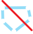

Barlang szerkesztése
Barlang szerkesztés áttekintése
A barlang szerkesztés a Speleo Studio egyik legfontosabb funkciója. Itt kezelheti a barlang alapvető információit, pont megjegyzéseket és attribútumokat, valamint a hurkok kezelése is lehetséges. Ez a fejezet a barlang szintű szerkesztésre fókuszál, a felmérés és attribútum szerkesztés külön fejezetekben kerül bemutatásra.
A barlang szerkesztéséhez az oldalsávban nyissa meg a Felfedező panelt, majd kattintson a barlang nevére, ekkor az adott barlang ikon sávja jelenik meg. Az ikonok funkciói:
- 🔠 Adatlap: Adatlap szerkesztése
- ❇️ Új felmérés: Új felmérés létrehozása
- Importálás: TopoDroid felmérés importálása
- 📍 Pont attribútumok: Pont attribútumok szerkesztése
- 🔀 Szakasz attribútumok: Szakasz attribútumok szerkesztése
- 🧩 Komponens attribútumok: Komponens attribútumok szerkesztése
- 🔄 Hurkok: Hurkok keresése, megjelenítése és hibák eliminálása
- 🎨 Szín Barlang színének változtatása
- 🎨 Szín Barlang színének törlése
- 🗑️ Törlés: Barlang törlése
A barlang láthatóságát a jelenetben az ábrán piros kerettel jelzett szem ikonra kattintva lehet szabályozni.
A barlang színét akkor van értelme beállítani, ha a jelnetben a barlangunkat más színnel szeretnénk megjeleníteni. Ez csak akkor látszódik, ha a vonal szín mód Barlangonként módra van állítva.
Felmérések importálás ebben a fejezetben nem tárgyaljuk, egy korábbi fejezet részletesen foglalkozott már ezzel.
Barlang adatlap szerkesztése
Metaadatok szerkesztése
Az adatlap tartalmazza a barlang alapvető információit:
Barlang alapadatok
- Név: Barlang egyedi neve
- Kataszteri szám: A barlang kataszteri száma
- Dátum: Az adatlap létrehozásának dátuma
- Készítő: Az adatlap készítője
- Ország: Mely országban található a barlang
- Régió / Tájegység: Mely régióban vagy tájegységben található a barlang
- Település: Mely településen található a barlang
EOV koordináták
A barlang kezdőpontjának EOV koordinátái lehet megadni, egyéb pontokhoz egyelőre nem tudunk fix koordinátákat adni.
- Pont neve: A pont neve, amelyhez az EOV koordináták tartoznak
- EOV Y: EOV Y koordináta
- EOV X: EOV X koordináta
- Magasság: Tengerszint feletti magasság
Pont megfeleltetések (aliaszok)
- Pont neve: A pont eredeti neve
- Pont megfeleltetése: Az aliasz neve, azaz milyen más néven érhető még el ez a pont
Adatok módosítása
1. Kattintson a szerkeszteni kívánt mezőre
2. Módosítsa az értéket
3. Kattintson a "Mentés" gombra
Statisztikák
A barlang statisztikáit a barlang adatlapján találhatjuk meg. A statisztikák jelentése a következő:
- Hossz: A barlang teljes hossza nem számítva a tüskéket és a kiegészítő, árva valamint a hibás méréseket
- Mélység: A barlang mélysége a bejárattól mérve
- Magasság: A barlang teljes magassága a bejárattól mérve
- Vertikális kiterjedés: A barlang vertikális kiterjedése, amely a magasság és mélység összege
- Pontok: A pontok száma, nem számítva az árva és hibás középvonal mérések pontjait
- Felmérések: Felmérések száma
- Izolált felmérések: Izolált felmérések száma
- Pont attribútumok: Pont attribútumok száma
- Szakasz attribútumok: Szakasz attribútumok száma
- Komponens attribútumok: Komponens attribútumok száma
- Hossz (árva): Árva mérések hossza
- Hossz (hibás): Érvénytelen vagy hibás mérések hossza
- Hossz (segéd): Segéd mérések hossza
- Legmélyebb pont: A barlang legmélyebb pontja
- Legmagasabb pont: A barlang legmagasabb pontja
- Vertikális kiterjedés (tüskékkel): A barlang vertikális kiterjedése figyelembe véve a tüskéket
Barlang színének szerkesztése
A barlang színét abban az esetben érdemes állítani, ha a vonal szín mód Barlangonként módra van állítva.
Szín módosítása
1. Kattintson a szín ikonra
2. Válassza ki a kívánt színt a megnyílő szín palettából
3. Kattintson szín választó palettán kívül, hogy a paletta eltűnjön
4. Állítja a vonal szín módot Barlangonként módra
A szín beállítása után a felmérés az adott színnel jelenik meg a Felfedezőben.
Pont megjegyzések szerkesztése
A pont megjegyzések lehetővé teszik, hogy minden felmérési ponthoz részletes információkat tároljon. Természetesen a felmérések méréseivel is megjegyzéseket fűzhet a Pontig pontra vonatkozólag, a pont attribútumok ezen felül teszik lehetővé a pontok jellemzését.
A pont megjegyzések nem jelennek meg a felmérés szerkesztőben, viszont a láblécben és a pont részleteinél, ha az adott pontra kattint a jelentben, igen.
Szerkesztő ablak áttekintése
A kommentek szerkesztés ikonra (💬) kattinva megnyílik a szerkesztő ablak a kommentek táblázatos megjelenítésével.
A szerkesztő ablak felépítése a következő:
- Ikon sáv (piros keret): A pont megjegyzések szerkesztésére szolgáló ikonok
- Táblázat fejléc (kék keret): A táblázat oszlopait megjelenítő fejléc, amely a sorok szűrésére is szolgál. Az oszlop neve alatt lévő beviteli mező (piros nyíl) segítségével szűrhetjük a sorokat. Például a Megjegyzés oszlop beviteli mezőjébe "Fal részlet" értéket írva a táblázatban lévő sorok közül csak a Megjegyzés oszlopban "Fal részlet" értéket tartalmazó sorok lesznek megjelenítve.
- Kommentek táblázata (lila keret): A kommentek listája, a táblázatban minden sor egy kommentet reprezentál. A táblázatban nem mindig sor látható egyszerre, ilyen esetben ne felejtsünk el görgetni a jobb oldalon.
- Táblázat lábléc (zöld keret): Pont oszlop esetén a kommentek számát adja meg.
Ikonsáv részletezése
Az egyes ikonok funkciói a következők:
- Visszavonás: Változtatások visszavonása
 Újra: Változtatások újra alkalmazása
Újra: Változtatások újra alkalmazása- Sor hozzáadása előtte: Új sor beszúrása a kiválasztott sor előtt
- Sor hozzáadása után: Új sor beszúrása a kiválasztott sor után
 Sor hozzáadása a végéhez: Új sor
beszúrása a táblázat végéhez
Sor hozzáadása a végéhez: Új sor
beszúrása a táblázat végéhez Sor(ok) törlése: Aktuális /
Kiválasztott sor vagy sorok törlése
Sor(ok) törlése: Aktuális /
Kiválasztott sor vagy sorok törlése- Sor(ok) validálása: Sorok validálása
- Sor(ok) frissítése: Adatok frissítése és elmentése
- Módosítások elvetése: Változtatások elvetése, szerkesztő bezárása
- Oszlopok láthatósága: Segítségével az egyes oszlopok láthatóságát lehet szabályozni
- Exportálás CSV-be: Táblázat mentése CSV formátumban
Pont megjegyzés felvétele
1. Kattintson a barlang nevére a Felfedezőben, majd a pont megjegyzés ikonra az ikon sávon
2. A megjelenő szerkesztőben vegyen fel új sort a Sor hozzáadása a végéhez gombra kattintva
3. Az új sorban adja meg a pont nevét, ezt a létező pontok listájából választhatja ki
4. Az új sorban adja meg a megjegyzést
5. Kattintson a Kommentek frissítése gombra a táblázat feletti ikon sorban
Pont megjegyzések törlése
1. Sorok kiválasztása
Válassza ki a törölni kívánt sorokat.
2. Törlés
Kattintson az "Aktív sorok törlése" gombra.
Pont megjegyzések validálása és frissítése
A Speleo Studio a validálás vagy a frissítés gombra kattintva ellenőrzi az adatok helyességét. Ha a pont megjegyzések nem helyesek, akkor a státusz oszlopban narancssárga ikon jelenik meg, amelyre kattinva a hiba részletes leírását kapjuk meg. A frissítése során hibás sorok is elmentődnek.
Validálási szabályok
- Pont: Nem lehet üres
- Megjegyzés: Nem lehet üres
- Duplikáció: Nem lehetnek duplikált sorok ugyanazzal a ponttal
Pont megjegyzések exportálása
CSV exportálás
1. Exportálás indítása
A szerkesztőben kattintson az "Exportálás CSV-be" gombra.
2. Fájl mentése
Válassza ki a mentési helyet és adja meg a fájlnevet.
Hurkok kezelése
Mit nevezünk huroknak?
Huroknak nevezzük a pontok egy sorozatát, amellyel egy mérési pont önmagába vezet. Tekintve, hogy a barlang egy irányított gráf, a hurkot a következőképpen is definiálhatjuk: A hurok egy olyan út (egymást követő pontok sorozata), amely ugyanabban a pontban kezdődik és végződik, és a kezdő/végpont kivételével pontok nem ismétlődnek. A hurkok kezelésekor a barlangot irányítatlan gráfként kezeljük, azaz függetlenül a mérés irányától.
A fenti ábrán összesen 4 hurkot találunk.
- 1. hurok: 1, 2, 3 pontokból áll
- 2. hurok: A,B,C,D ... X pontokból áll
- 3. hurok: B,C,α,β ... pontokból áll
- 4. hurok: A,B ... β,α,C,D ... X pontokból áll
Mit nevezünk hurok hibának?
A Speleo Studio a középvonalak számításakor a méréseken megy végig és az adatok alapján (hossz, irány, dőlés) számítja ki a mérés pontjainak koordinátáit. Egy hurok esetén a hurkot egy záró mérés zárja, amely egy már ismert, kiszámolt koordinátákkal rendelkező pontba vezet. A záró mérés adataiból (hossz, irány, dőlés) kiszámolt koodináták soha nem egyeznek meg a már ismert pont koordinátáival, amely a mérés módszer pontatlanságából adódik. A két koordináta közötti eltérést, különbséget nevezzük hurok hibának.
A fenti ábrán a zölddel jelölt hurok esetén az X -> A zárómérés (piros vonal) által meghatározott koordináta eltér az A pont koordinátáitól, amelyet a szaggatott piros vonal jelez.
Hurokkezelő
A hurokkezelő a barlang nevére kattinva megjelenő ikon sávban a 🔄 ikonra kattinva érhető el.
A szerkesztő ablak felépítése a következő:
- Ikon sáv (piros keret): A hurkok megjelenítésére szolgáló ikonok
- Táblázat fejléc (kék keret): A táblázat oszlopait megjelenítő fejléc, amely a sorok szűrésére és rendezésére is szolgál. Az ábrán fehér nyíllal jelzett háromszögre kattintva a táblázat az adott oszlop értékei szerint rendezhető növekvő vagy csökkenő sorrendben. Az oszlop neve alatt lévő beviteli mező (piros nyíl) segítségével szűrhetjük a sorokat. Például az Út oszlop beviteli mezőjébe "12" értéket írva a táblázatban lévő sorok közül csak a Út oszlopban "12" értéket tartalmazó sorok lesznek megjelenítve.
- Hurkok táblázata (lila keret): A hurkok listája, a táblázatban minden sor egy hurkot reprezentál. A táblázatban nem mindig sor látható egyszerre, ilyen esetben ne felejtsünk el görgetni a jobb oldalon.
- Táblázat lábléc (zöld keret): Delta távolság oszlop esetén a hurok hibák össz távolságát adja meg.
Ikonsáv részletezése
Az egyes ikonok funkciói a következők:
- Összes hurok megjelenítése: Összes hurok megjelenítése a jelenetben. Érdemes lehet az ablakot minimalizálni, hogy jól lássuk a jelenetben a hurkokat. Az ablak bezárásával a hurkok elrejtődnek.
-  Összes hurok elrejtése: Összes megjelenített hurok elrejtése a jelenetben
- Összes eltérést okozó mérés megjelenítése: A jelenetben azok a mérések jelennek meg, amelyek egy hurkon vannak, de mérés alapján számított koordinátáik nem egyeznek meg meg mérés kezdő vagy végpontjának kezdő koordinátáival. A hurok zárás egy ilyen tipikus mérés, amely sok esetben a hurok hibát okozza. Ha a hurkon van másik olyan pont, ami már két ismert pontot köt össze, akkor azok hibája is megjelenthet. A jelenetben ezek a mérések piros színnel jelennek meg akkor, ha a hosszuk a 10 centimétert meghaladja. Az ablak bezárásával ezek a mérések nem jelennek meg.
 Összes eltérést okozó mérés elrejtése:
Az összes megjelenített eltérést okozó mérés elrejtése a jelenetben
Összes eltérést okozó mérés elrejtése:
Az összes megjelenített eltérést okozó mérés elrejtése a jelenetben
Oszlopok részletezése
- Láthatóság: Az adott hurok láthatóságát lehet vele szabályozni
- Szín: A megjelenített hurok színét lehet vele szabályozni. A kis piros X-re kattinva az adott hurok láthatóvá válik és az ikon kis zöld pipára változik.
- Távolság: A hurok hosszát adja meg. Az oszlop sorrendje változtatható.
- Δ Távolság: A hurok hibák hossza az adott hurkon. Az oszlop sorrendje változtatható.
- Δ Irány: Az összevont hurok hibák irány eltérése.Az oszlop sorrendje változtatható.
- Δ Dőlés: Az összevont hurok hibák dőlés eltérését adja meg. Az oszlop sorrendje változtatható.
- Δ Százalék: A hurok hibák hosszának a hurok hosszához viszonyított százalékát adja meg. Az oszlop sorrendje változtatható.
- Út: A hurkot alkotó pontok sorozata.
A következő képen a Pál-völgyi-barlangban található hurkok láthatóak, amelyeket az első ikonnal jelöltünk meg.
A következő képen a Pál-völgyi-barlangban található hurk hibák láthatóak piros vonallal, amelyeket a harmadik ikonnal jelöltünk meg.
Hurok hibák megszűntetése
A hurok hibákat két módszerrel szüntethetjük meg a hurokkezelőben. Az első módszer lényege, hogy hurok hibát okozó méréseket korrigáljuk a már létező pontok koordinátái alapján, ezt a módszert az első ábra mutatja. Az zölddel jelzett 1, 2, A, B, C, X hurok záró mérése (X -> 1') jelentős hurok hibát okoz. Ennél a módszernél ezt a mérés egyszerűen módosítja az algoritmus és úgy állítja be a hosszát, irányát és dőlését, hogy a zárómérés pontosan az 1-es pontba mutasson, ezt reprezentálja a sárgával jelzett mérés. Ennek a megoldásnak a nagy előnye, hogy más méréseket és magát a középvonalat nem módosítja.
A második módszer lényege, hogy a hurok hibát elosztjuk úgy a hurok mérései között, hogy a végén a korrigált mérésekkel a hurok pontosan az 1-es pontban záródjon. A korrigálás során a Bowditch szabályt használjuk, azaz a hurok hibát a mérések hosszának arányában osztjuk el. Egy hosszabb mérés nagyobb korrekciót kap, egy kisebb mérés kisebbet. Ezzel a módszerrel nem csak a hurok többi pontját, hanem esetleg a középvonalat (poligon) is módosíthatjuk. A második ábrán sárga szaggatott vonalak jelzik a korrigált hurkot és kék szaggatott vonal a módosult középvonalat.
- 1. Kattintsunk a hurokkezelőben jobb egér gombbal az adott hurkon
- 2. Ekkor megjelenik a kontextus menü
- 3. Vagy válasszuk a Hurok hiba elosztása szakaszok között vagy a Hurok eltérést okozó mérések korrigálása opciót